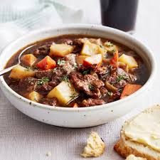

Lamb Stew

Hearty Lamb Stew
This hearty, flavorful lamb stew can be made in under 2 hours, and all in one pot! With a rich, velvety broth and tender pieces of lamb, you'd be hard pressed to find a cozier cold weather meal.
You might be wondering where the flour is in this recipe is. We've got good news: you don't need it! When the potatoes are added, they release their natural starches, which just so happen to be very good at thickening the stew. The resulting broth is velvety smooth and super flavorful.
Ingredients
- 1 Tbsp. vegetable oil
- 2 lb. lamb shoulder roast, cubed into 1" pieces
- 1 onion, chopped
- 2 carrots, peeled and cut into rounds
- 2 stalks celery, chopped
- Kosher salt
- Freshly ground black pepper
- 3 cloves garlic, minced
- 1/4 cup tomato paste
- 1 tsp. ground cumin
- 1 tsp. smoked paprika
- 6 cups beef broth
- 1 cup red wine
- 1 Tbsp. Worcestershire sauce
- 3 sprigs fresh rosemary
- 3 bay leaves
- 2 lb. baby potatoes, halved
- 1/4 cup freshly chopped parsley, for garnish
Directions
- Step 1:
In a large dutch oven or pot over medium-high heat, heat oil. Add lamb and cook on all sides until seared, 10 minutes, working in batches if necessary. Transfer to a plate.
- Step 2:
In the same pot, cook onion, carrots, and celery until soft, 5 minutes. Season with salt and pepper. Add garlic, tomato paste, cumin, and paprika and cook until garlic is fragrant and tomato paste has darkened, 2 minutes.
- Step 3:
Add lamb back to dutch oven then add broth, wine, Worcestershire sauce, rosemary, and bay leaves.
- Step 4:
Bring to a boil then reduce heat to a simmer. Season with salt and pepper. Cover and let simmer until lamb is tender, 30 minutes.
- Step 5:
Add potatoes and simmer, covered, until potatoes are tender and stew has thickened, 30 minutes.
- Step 6:
Remove bay leaves and rosemary and garnish with parsley before serving.
We suggest serving this delicious stew with plenty of bread. You're going to want to soak up every last drop!